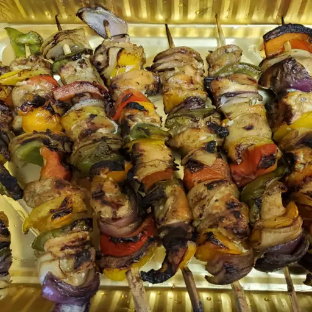

recipes: chicken kebab
chicken kebab is a truly global food. there is nothing more universal than meat (and vegies) on a skewer. In this recipe we'll explore a an economical made by us! So lets get into it.
Ingredients
- 2 pounds boneless chicken breasts,
cut into cubes
- 1 large sweet red pepper cut into chunks
- 1 large green pepper cut into chunks
- 1 large onion, cut into wedges
- 2 garlic cloves, minced
seasoning
- 2 teaspoons steak seasoning
- 1 tablespoon prepared horseradish
- 1/2 cup canola oil
- 2/3 cup honey
- 2/3 cup soy sauce
Good to Know
- Prep Time:10 minutes
- Cook Time: 20 minutes
- Total Time: 20-30 minutes
- Yields: 6 servings
Steps
Meat Preparation
- Make the marinade: Whisk honey, soy sauce, oil, horseradish, and black pepper together in a large glass bowl.
- Remove 1/4 cup of the marinade to a small jar; seal and set aside to use while cooking.
- Add chicken, onions, bell peppers, and garlic to the marinade in the large bowl. Cover and marinate in the refrigerator for 2 hours or overnight.
- Preheat your skillet with high heat and lightly oil the grate
- Drain marinade from chicken and vegetables; discard marinade. Thread chicken and vegetables alternately onto skewers.
- Place kabobs on the skillet. Cook, turning frequently and brushing with reserved marinade, until nicely browned on all sides and chicken is no longer pink in the center, about 12 to 15 minutes.
- Serve hot and enjoy
Final Result

The photo isn't accurate to recipe. However this is very similar to what it should look like!
Keep in mind you can always change what goes inside.
This recipe was provided by Sinan Bruce for EZ Chef. The author
is not held responsible for any subsequent weight gain caused by this recipe or the dislike of the taste.
nutrition facts
| calories |
protein |
fat |
carbs |
| 179 |
7g |
12g |
17g |